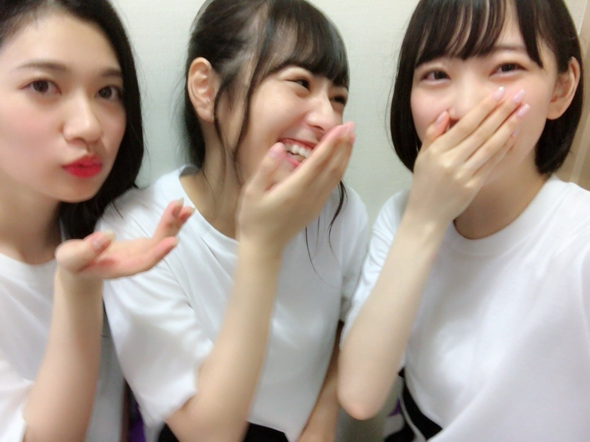
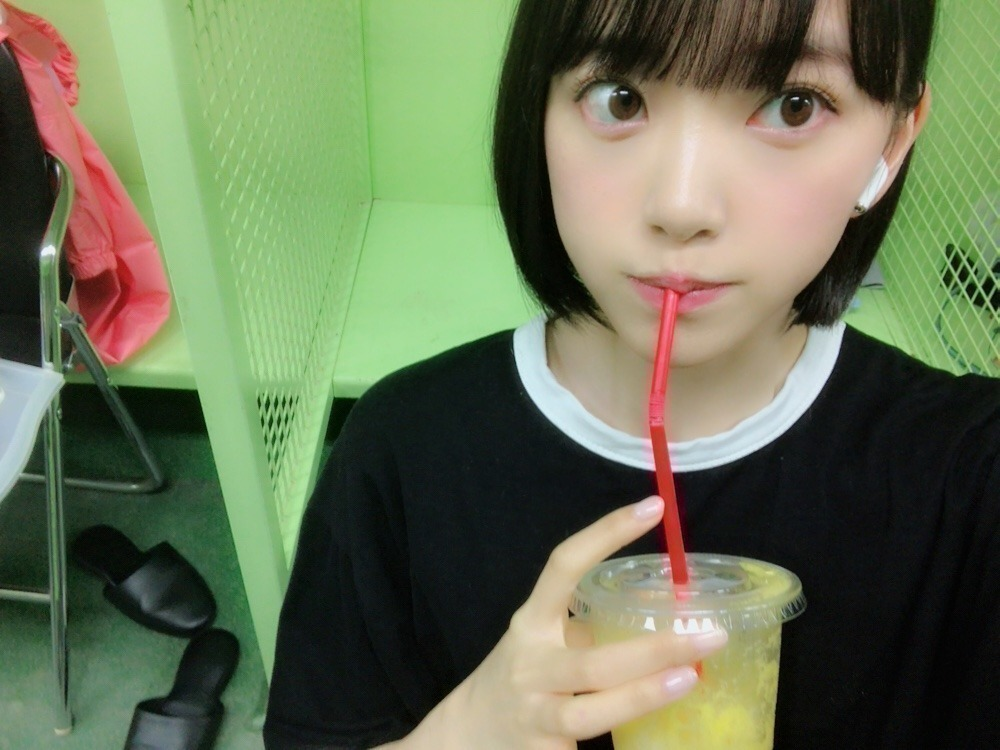
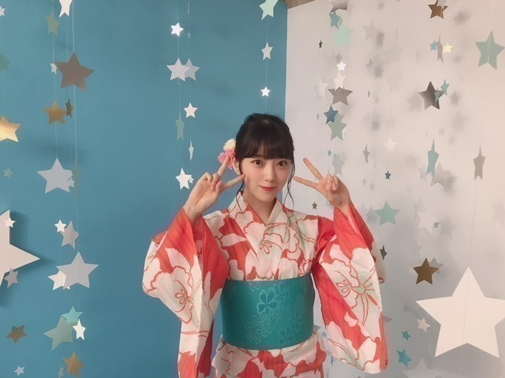
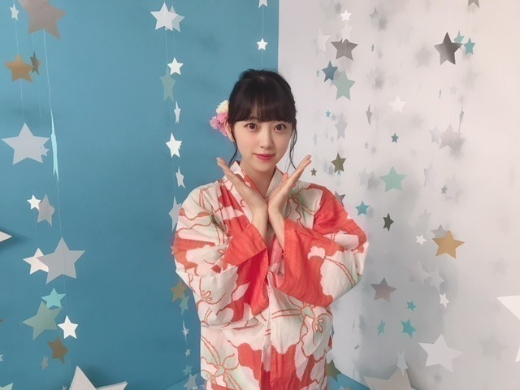
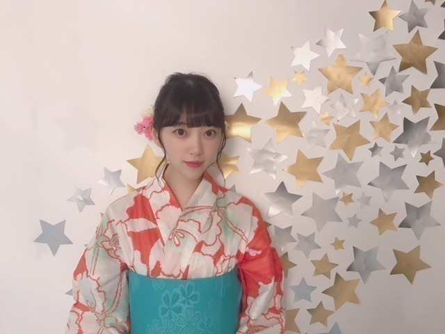

2018/0710Tueみえているもの
バースデーライブ
3日間無事完走いたしました！！！

久しぶりのこの3人！ ワタボコリ〜
久しぶりに日奈子と一緒にライブができて
なんていうんだろう
なんかね、嬉しかったです！
ツアーも楽しみ。
ショートヘアにしてから久しぶりのライブでしたが、
見つけやすかったという感想を友人からいただき
良かったなぁとo(^▽^)o
皆さんも、見つけられましたか？？

私はできる限り目を凝らして
タオルやうちわやサイリウムを
探しました(^-^)
嬉しかったです！
ステージからよく見えます！ありがとう！
ダンスパフォーマンスとか
新曲披露とか 2会場同時開催とか
自転車乗ったりとか
色んな試みをしました。
正直今回はリハーサルに参加できる日がほぼ無くて
不安と焦りもあったけど
自分なりに全力を尽くしました。
見に来てくださる皆さんの笑顔と
歓声が嬉しくて...
ツアーも楽しみにしとってね！
そして伊織とちはるさんは
最後のライブでした。
今まで本当にお疲れ様でした！
本番前、伊織とお話ししたときに
寂しいっていう気持ちを圧し殺しながら
楽しもうねって言ったんですけど
やっぱり凄く寂しくて。
でも伊織がこれからもあの笑顔で
楽しくしていてくれたら
それでいいって思いました！
写真集1番好きって言ってくれたの
めちゃくちゃ嬉しかった（ ｉ _ ｉ ）
大好きだよ〜伊織。
お互い頑張ろう！
卒業しても2人はずっとメンバーで、仲間です。
出会えてよかった！



昔から浴衣とかお着物が好きで
毎年浴衣は新調しています...
オレンジ x 白のこの浴衣
サイリウムカラーで帯は好きな水色で
お気に入りの浴衣♪
夏〜
暑さの中にもいろんな発見を探して
学びの多い
準備にふさわしい夏にしたいです！
変わりゆくものに追いつかないと
受け入れないと
変わらないと
だね。
ザンビ プロジェクト わくわく。
まだ秘密〜！
では(^-^)
2018/07/10 11:06
コメント(583)
みおちゃん こんにちは！
こんにちは！
ブログ更新ありがとう＼(^o^)／
バースデーライブ 3日間お疲れさまでした
浴衣すごく似合ってるね

可愛い～
熱中症、体調に気を付けてね
ブログ更新ありがとう＼(^o^)／
バースデーライブ 3日間お疲れさまでした
浴衣すごく似合ってるね
可愛い～
熱中症、体調に気を付けてね
バスラお疲れ様☺️1日目秩父宮で参戦したけどめっちゃ楽しかった！アピールしたけどレスもらえなかったのは残念だったけど可愛い未央奈が見れたから良し笑
月曜日初めて握手会行きます！
忙しいと思うけど頑張って
月曜日初めて握手会行きます！
忙しいと思うけど頑張って
未央奈〜2日目ロマいかの時ビームありがとうねー
一生忘れる事のできない思い出になりました〜
本当にありがとう
一生忘れる事のできない思い出になりました〜
本当にありがとう
未央奈～
ブログ更新ありがとう
神宮＆秩父宮 3日間お疲れさま‼️‼️
本当に本当に最高のライブやったよ✨
メンバー全員とファンのみんな全員で1つのライブを作るって
めっちゃ素敵やねヽ(*´∀｀)ﾉﾟ:.｡+ﾟ
これからも、応援してるよ‼️
未央奈のショートカット大好き✨
(*´∨｀* )ﾉ
ブログ更新ありがとう
神宮＆秩父宮 3日間お疲れさま‼️‼️
本当に本当に最高のライブやったよ✨
メンバー全員とファンのみんな全員で1つのライブを作るって
めっちゃ素敵やねヽ(*´∀｀)ﾉﾟ:.｡+ﾟ
これからも、応援してるよ‼️
未央奈のショートカット大好き✨
(*´∨｀* )ﾉ
バスラ、初日行けましたー！
雨は残念でしたが、そんなん気にならないくらいちょー楽しかったです♪
ありがとうございました＼(^o^)／
バスラの3日間は雨が降ったり、めっちゃあっつかったり大変だったと思いますので、ゆっくりお休みください(*^▽^*)
雨は残念でしたが、そんなん気にならないくらいちょー楽しかったです♪
ありがとうございました＼(^o^)／
バスラの3日間は雨が降ったり、めっちゃあっつかったり大変だったと思いますので、ゆっくりお休みください(*^▽^*)
バスラ初日いきました！秩父宮だったんだけど、最初みおながステージにいるのを見つけた時のテンションの上がり方は今でも忘れないよ！笑 ほんとに楽しいライブだった、ありがとう！
夏楽しもうね！！
夏楽しもうね！！
バスラすごく楽しかったです！
次は福岡に行きます！
福岡は地元なので、未央奈にも福岡のグルメを楽しんでほしいと思います！
福岡公演楽しみにしてます！
次は福岡に行きます！
福岡は地元なので、未央奈にも福岡のグルメを楽しんでほしいと思います！
福岡公演楽しみにしてます！
応援してます〜
3日間のライブお疲れ様でした。斬新な試みだったようで、その分負担も大きかったのではないかと思います。成功で何よりでした。
これからまたいろいろと堀さんの活躍が見られそうで楽しみです。
東京ドームのディスクも今日到着しました。近いうちに時間を取って見ようと思っています。
それではまた。
これからまたいろいろと堀さんの活躍が見られそうで楽しみです。
東京ドームのディスクも今日到着しました。近いうちに時間を取って見ようと思っています。
それではまた。
未央奈！
シンクロニシティライブ、3日間行ったよ！
未央奈、キラキラしてて可愛かった♡
3日目の秩父宮で、スタンドの後ろの方だったけどうちわを見つけてくれて、ビームしてくれたのがめっちゃ嬉しかった(；；)♡
ほんとにありがとう！！良い夏の思い出になりました(；；)♡
シンクロニシティライブ、3日間行ったよ！
未央奈、キラキラしてて可愛かった♡
3日目の秩父宮で、スタンドの後ろの方だったけどうちわを見つけてくれて、ビームしてくれたのがめっちゃ嬉しかった(；；)♡
ほんとにありがとう！！良い夏の思い出になりました(；；)♡
バスラ楽しかったー！！ありがとー！！
ザンビもたのしみ！
ザンビもたのしみ！
飛鳥ちゃんが言っていたように、謎めいて、ミステリアスな雰囲気があるけど、真っ直ぐで、思いやりがあり、何事にもアツく取り組む女性と感じています。"未央奈"っていい名前だね。これからの乃木坂を引っ張って行くメンバーの１人として、楽しみながら、頑張ってね♪応援しています。(о´∀`о)
バスラお疲れ様ーー
今回のライブはアーティスト初2会場同時ライブだったからすごく心配していたけど成功してよかった〜
これから真夏の全国ツアーが色々な所で始まるけど乃木坂メンバー全員体調崩さず頑張ってね！応援してるよー
今回のライブはアーティスト初2会場同時ライブだったからすごく心配していたけど成功してよかった〜
これから真夏の全国ツアーが色々な所で始まるけど乃木坂メンバー全員体調崩さず頑張ってね！応援してるよー
バスラお疲れ様！楽しかったよ！
好きやー！！
好きやー！！
ブログ更新ありがとー！
ワタボコリ聞きたかったなーでもきぃちゃんがライブ出てくれて本当に良かった！！最高の思い出になりました。ゆっくり休んでください〜
ザンビ楽しみにしてますね
ワタボコリ聞きたかったなーでもきぃちゃんがライブ出てくれて本当に良かった！！最高の思い出になりました。ゆっくり休んでください〜
ザンビ楽しみにしてますね
バースデーライブお疲れ様でした 毎年のことだけどみんな細い身体で強いパワーを持っているね、見ていて元気でたよ。
毎年のことだけどみんな細い身体で強いパワーを持っているね、見ていて元気でたよ。
そしてザンビプロジェクト！乃木坂とホラー、両方大好きなのでめっちゃ楽しみ
そしてザンビプロジェクト！乃木坂とホラー、両方大好きなのでめっちゃ楽しみ
ザンビプロジェクト楽しみ！
バスラお疲れさま！
気づいてもらえなかったけどめっちくちゃ楽しかったよ
ザンビ絶対怖いやつだから見れるか不安だなーw
次は福岡で待ってるね！
気づいてもらえなかったけどめっちくちゃ楽しかったよ
ザンビ絶対怖いやつだから見れるか不安だなーw
次は福岡で待ってるね！
バスラ3日間お疲れ様！
福岡のツアーで観れるのを楽しみにしてるね！
やっぱ同期と戯れる未央奈、
いい笑顔だね(*´ω｀*)
福岡のツアーで観れるのを楽しみにしてるね！
やっぱ同期と戯れる未央奈、
いい笑顔だね(*´ω｀*)
未央奈ありがとう！
最高の三日間だった！
最高の三日間だった！
堀ちゃん、こんにちは、
バースデーライブ三日間お疲れ様でした
忙しいスケジュールの中での準備は
大変だったと想像します
堀ちゃんやメンバーのおかげで
三日間楽しい時間を過ごすことができました
本当にありがとうございました
伊織ちゃん、ちーちゃん、
卒業するのは寂しいことですが、
今後も仲間であることに変わりは
ないわけですから
ずっと大切にしてくださいね
きいちゃんの写真
びーむの写真
ありがとうございます
嬉しいです
バースデーライブ三日間お疲れ様でした
忙しいスケジュールの中での準備は
大変だったと想像します
堀ちゃんやメンバーのおかげで
三日間楽しい時間を過ごすことができました
本当にありがとうございました
伊織ちゃん、ちーちゃん、
卒業するのは寂しいことですが、
今後も仲間であることに変わりは
ないわけですから
ずっと大切にしてくださいね
きいちゃんの写真
びーむの写真
ありがとうございます
嬉しいです
堀ちゃんがメンバー一人一人をしっかり見てくれているのが伝わります！
バスラお疲れ様でした！
ツアーに向けて、ゆっくり休んで下さい！
バスラお疲れ様でした！
ツアーに向けて、ゆっくり休んで下さい！
ライブお疲れ様！
お疲れ様です！
ライブ参加出来なかったけど未央奈が楽しめたみたいで良かったです！
2期生が卒業という形では初めていなくなってしまうのは寂しいけれど最後まで大切な時間を過ごしてください！
14日の個握行きますね！
ライブ参加出来なかったけど未央奈が楽しめたみたいで良かったです！
2期生が卒業という形では初めていなくなってしまうのは寂しいけれど最後まで大切な時間を過ごしてください！
14日の個握行きますね！
ワタボコリめっちゃ好き〜ライブで見てみたい
みおなライブお疲れ様！
俺三日間行ったわ！！席は遠かったからあれだけどみおなの名前めっちゃ叫んだぞ笑白とオレンジのサイリウム振りまくったわー
伊織とちはるは最後だったね、感動した
俺的には最後に二期生の曲やって欲しかったなあ
めっちゃ浴衣似合ってるじゃん！かわいすぎ
ザンビ怖すぎなんだけど笑笑 あのBGMやばい笑
早く見たいわー
映画？ドラマ？どっちだ？
みおなライブお疲れ様！
俺三日間行ったわ！！席は遠かったからあれだけどみおなの名前めっちゃ叫んだぞ笑白とオレンジのサイリウム振りまくったわー
伊織とちはるは最後だったね、感動した
俺的には最後に二期生の曲やって欲しかったなあ
めっちゃ浴衣似合ってるじゃん！かわいすぎ
ザンビ怖すぎなんだけど笑笑 あのBGMやばい笑
早く見たいわー
映画？ドラマ？どっちだ？
3日間本当にお疲れ様でした！
今回は初日に参戦しました！
大雨だったけどそんな事気にならずめちゃくちゃ楽しいライブだった！
楽しませてくれてありがと(^ ^)
次は名古屋2日目行きます！
今回は初日に参戦しました！
大雨だったけどそんな事気にならずめちゃくちゃ楽しいライブだった！
楽しませてくれてありがと(^ ^)
次は名古屋2日目行きます！
みなおお疲れさまでした。きいちゃんとのお写真うれしいです!
みおなみおな〜！！
三日間いったの！いっぱいみおなみつけたの！！
10/27の握手会行くから、またなっちゃんって呼んでね！！♡
三日間いったの！いっぱいみおなみつけたの！！
10/27の握手会行くから、またなっちゃんって呼んでね！！♡
3日間お疲れ様でした。(≧∀≦)
あの教室最高でした。とてもよく観れました。(´∀｀)
浴衣とても美しい。❤️
ザンビ‼️
大好きです。❤️
あの教室最高でした。とてもよく観れました。(´∀｀)
浴衣とても美しい。❤️
ザンビ‼️
大好きです。❤️
未央ちゃんこんにちはるじおん
ブログ更新ありがとう！
メールもありがとう。待ってたよ〜
ライブ終わったあと前回のブログにも感想書いたんだけど、あらためて6thyearBirthdayLIVEお疲れさま。そして成功おめでとう！沢山楽しそうで可愛い未央ちゃんが観られて眼福。幸せでした
2日目センターステージのすぐ近くで見てたんだけど始まってすぐくらいにステージから躓いて落ちそうになったよね？ハラハラした！怪我しなくて本当に良かった、、
乃木坂の詩の時にタオルに気づいて手振ってくれて嬉しかったよ〜、今年一嬉しい出来事だった！
素敵な夏の思い出をありがとう。まだ全国ツアーもあるけどね。。名古屋と仙台の会場に未央ちゃん応援に行くからそれまでお互い体調に気をつけて頑張ろうね。
ワタボコリトリオの写真見て安心した
強い2期生の絆、伊織ちゃんの卒業前にもう一度現2期生が揃った2期生楽曲が聴きたかったのと、2期生の単独ライブが観たかった…ネガティブな発言してゴメンね。でもそれくらい期待してたから、残念な気持ちでいっぱいだけどこれからも変わらず2期生と伊織ちゃんを応援していきます！頑張れ2期生！！
ザンビ怖すぎるよ〜〜
でも大好きなホラー映画に出演できて良かったね！
た、たた、楽しみです。
ブログ更新ありがとう！
メールもありがとう。待ってたよ〜
ライブ終わったあと前回のブログにも感想書いたんだけど、あらためて6thyearBirthdayLIVEお疲れさま。そして成功おめでとう！沢山楽しそうで可愛い未央ちゃんが観られて眼福。幸せでした
2日目センターステージのすぐ近くで見てたんだけど始まってすぐくらいにステージから躓いて落ちそうになったよね？ハラハラした！怪我しなくて本当に良かった、、
乃木坂の詩の時にタオルに気づいて手振ってくれて嬉しかったよ〜、今年一嬉しい出来事だった！
素敵な夏の思い出をありがとう。まだ全国ツアーもあるけどね。。名古屋と仙台の会場に未央ちゃん応援に行くからそれまでお互い体調に気をつけて頑張ろうね。
ワタボコリトリオの写真見て安心した
強い2期生の絆、伊織ちゃんの卒業前にもう一度現2期生が揃った2期生楽曲が聴きたかったのと、2期生の単独ライブが観たかった…ネガティブな発言してゴメンね。でもそれくらい期待してたから、残念な気持ちでいっぱいだけどこれからも変わらず2期生と伊織ちゃんを応援していきます！頑張れ2期生！！
ザンビ怖すぎるよ〜〜
でも大好きなホラー映画に出演できて良かったね！
た、たた、楽しみです。
未央奈ちゃん♪こんにちは＼(^o^)／
バースデーライブ３日間お疲れ様(*^^*)
写真可愛い(//∇//)
久しぶりに日奈子ちゃんと
ライブできて良かったね(*^O^*)
ツアーも楽しみにしてるね(≧▽≦)
伊織ちゃんとちはるちゃん
最後のライブだったね。
お互い頑張ってね！
出会えて良かったね♪
浴衣可愛い～(≧▽≦)
ザンビすごく楽しみ＼(*⌒0⌒)ｂ♪
またね♪
バースデーライブ３日間お疲れ様(*^^*)
写真可愛い(//∇//)
久しぶりに日奈子ちゃんと
ライブできて良かったね(*^O^*)
ツアーも楽しみにしてるね(≧▽≦)
伊織ちゃんとちはるちゃん
最後のライブだったね。
お互い頑張ってね！
出会えて良かったね♪
浴衣可愛い～(≧▽≦)
ザンビすごく楽しみ＼(*⌒0⌒)ｂ♪
またね♪
バスラお疲れ様！
可愛かったよ！！
全ツ仙台公演行くね！
可愛かったよ！！
全ツ仙台公演行くね！
バスラ お疲れ様でしたー！
最高でした、一番可愛かったです！
最高でした、一番可愛かったです！
みおなお疲れ様！！
ほんとにみおな可愛くて輝いてたよー！！
福岡も楽しみにしてるね！！
頑張ってね！！
ほんとにみおな可愛くて輝いてたよー！！
福岡も楽しみにしてるね！！
頑張ってね！！
堀ちゃん
こんちは〜
夏の全国ツア〜三日間お疲れさまでした。
僕は真ん中辺りにいたので初日の
神宮アリーナではすぐ見つかりましたでぇー☺️
ボブ未央奈に乾杯❤️
ただ雨ヤバかったよ(笑)
でもみんなのライヴ見てたら
雨忘れてました(笑)
終始
めちゃ楽しめてサイコーの夏がスタートきれて
とても良かったです
未央奈、ありがとう
またこれからも行きたいと思ってます☺️
どうか当た〜れ(^∧^)
それと、
伊織の笑顔は僕もずっと忘れない！！
今でも伊織の勇姿この目に焼き付けてます
それぐらい伊織も大好きでしたよ☺️
卒業しても陰ながらずっと応援してます。
伊織、ちーちゃんお疲れさまでした。
☆ミ☆ミ☆ミ☆ミ☆ミ☆ミ☆ミ☆ミ☆ミ☆ミ
未央奈、浴衣めちゃお似合いですね
サイリウムカラーのオレンジと白
堀ちゃんにぴったりだと思うよ✨
それに水色の帯が絶妙にアクセント効いてて
いい感じ
ちなみに僕はオレンジ色が好きですよ✌️
静岡なので地元チーム、
Jリーグの清水エスパルスのファンなので
ずっと好きなオレンジ色ですよ❤️
おかげで
家のなかはオレンジ色いっぱいです(笑)
この夏は
お互いいろんな経験とかをして
何事にもチャレンジしましょう✌️
あ！
『ザンビ プロジェクト』
なんか楽しめそうo(*ﾟ∀ﾟ*)o
怖い話はめちゃ好きだから
解禁楽しみにしてまーーーーす( ≧∀≦)ノ
ではでは
今日から
また１週間お互いはりきって行こう
あ、
ワタボコリ〜コンビ見てみたいかな☆ミ
また
堀北コンビにも期待してマチュウ〜(笑)
未央奈、またなぁ〜✋☺️
こんちは〜
夏の全国ツア〜三日間お疲れさまでした。
僕は真ん中辺りにいたので初日の
神宮アリーナではすぐ見つかりましたでぇー☺️
ボブ未央奈に乾杯❤️
ただ雨ヤバかったよ(笑)
でもみんなのライヴ見てたら
雨忘れてました(笑)
終始
めちゃ楽しめてサイコーの夏がスタートきれて
とても良かったです
未央奈、ありがとう
またこれからも行きたいと思ってます☺️
どうか当た〜れ(^∧^)
それと、
伊織の笑顔は僕もずっと忘れない！！
今でも伊織の勇姿この目に焼き付けてます
それぐらい伊織も大好きでしたよ☺️
卒業しても陰ながらずっと応援してます。
伊織、ちーちゃんお疲れさまでした。
☆ミ☆ミ☆ミ☆ミ☆ミ☆ミ☆ミ☆ミ☆ミ☆ミ
未央奈、浴衣めちゃお似合いですね
サイリウムカラーのオレンジと白
堀ちゃんにぴったりだと思うよ✨
それに水色の帯が絶妙にアクセント効いてて
いい感じ
ちなみに僕はオレンジ色が好きですよ✌️
静岡なので地元チーム、
Jリーグの清水エスパルスのファンなので
ずっと好きなオレンジ色ですよ❤️
おかげで
家のなかはオレンジ色いっぱいです(笑)
この夏は
お互いいろんな経験とかをして
何事にもチャレンジしましょう✌️
あ！
『ザンビ プロジェクト』
なんか楽しめそうo(*ﾟ∀ﾟ*)o
怖い話はめちゃ好きだから
解禁楽しみにしてまーーーーす( ≧∀≦)ノ
ではでは
今日から
また１週間お互いはりきって行こう
あ、
ワタボコリ〜コンビ見てみたいかな☆ミ
また
堀北コンビにも期待してマチュウ〜(笑)
未央奈、またなぁ〜✋☺️
バスラお疲れ様でした～(^o^ゞ
確かにショートカットは見つけやすかったよ～
確かにショートカットは見つけやすかったよ～
ワタボコリ3人本当に大好きです！
日奈子、、(´；ω；｀)
未央奈お疲れ様！！
ゆっくり休んでね！
日奈子、、(´；ω；｀)
未央奈お疲れ様！！
ゆっくり休んでね！
未央奈バスラ
三日間お疲れ様〜
見に行ってサイリウム振ってたけど気づいてもらえんかった泣
全握行くから待っとってね
三日間お疲れ様〜
見に行ってサイリウム振ってたけど気づいてもらえんかった泣
全握行くから待っとってね
こんちゃ！みおな♪♪ヽ(´▽｀)/ バスラlive！お疲れ様でした(*≧∀≦*) ちはる♪といおり♪がラスト ステージ・・・（ ＴДＴ） 仲間は永遠！ 乃木坂46 進化系 で？(゜ロ゜)故郷は大丈夫だった？
ああ、日奈子の笑顔が可愛すぎる♡♡♡♡♡
みお＼(^o^)／お疲れ様でした
バスラお疲れ様でした
これからも頑張って
伊織ちゃんと残り時間大切にして(´；ω；｀)
今後も仲良くしてね
そして、念願のホラー映画出演＼(^o^)／楽しみ。ホラーめちゃ苦手なのに(///_///)
みお＼(^o^)／お疲れ様でした
バスラお疲れ様でした
これからも頑張って
伊織ちゃんと残り時間大切にして(´；ω；｀)
今後も仲良くしてね
そして、念願のホラー映画出演＼(^o^)／楽しみ。ホラーめちゃ苦手なのに(///_///)
未央奈ー更新ありがとう。
バースデーライブお疲れ様！僕はライブ自体あまり行かないし今回も行ってないんだけど！昨日ニュースになってたよ自転車で二会場行き来するメンバーの姿が出ていたよ、僕も行きたくなっちゃった
バースデーライブで二人のメンバーが卒業しちゃったね本人が決めたことだから応援したいのは山々なんだけどやっぱり寂しいもんだね
今年の夏は相当暑いらしいね未央奈体調に気おつけてね！
ザンビプロジェクトどんなの何だろう？映像見たけどホラー関係の怖い 奴かな？まだまだ分からない事だらけだ楽しみにしているね。
奴かな？まだまだ分からない事だらけだ楽しみにしているね。
浴衣写真ありがとね！そういえば昔毎年新調してるって言ってなかったけ！、今日のは特に甲乙付け難いな全部可愛いよ～～
未央奈の写真はいつも可愛い気がするけど浴衣はやっぱり別格だね可愛過ぎる僕は今日あの世へ行くのか？
ではね～～～
バースデーライブお疲れ様！僕はライブ自体あまり行かないし今回も行ってないんだけど！昨日ニュースになってたよ自転車で二会場行き来するメンバーの姿が出ていたよ、僕も行きたくなっちゃった
バースデーライブで二人のメンバーが卒業しちゃったね本人が決めたことだから応援したいのは山々なんだけどやっぱり寂しいもんだね
今年の夏は相当暑いらしいね未央奈体調に気おつけてね！
ザンビプロジェクトどんなの何だろう？映像見たけどホラー関係の怖い
浴衣写真ありがとね！そういえば昔毎年新調してるって言ってなかったけ！、今日のは特に甲乙付け難いな全部可愛いよ～～
未央奈の写真はいつも可愛い気がするけど浴衣はやっぱり別格だね可愛過ぎる
ではね～～～
みおなー、ブログ更新ありがとう！
バスラ可愛かったで〜
バスラ可愛かったで〜
バスラ楽しかったよぉ！！！！！
こんにちは。
俺は行けなかったんだけど、楽しいライブができて良かったね。
リハーサルに参加できないのに、本番をやり切っちゃうなんて、みおなちゃんはホントに凄いね。
俺も浴衣が好きだよ。女の子の浴衣だけだけど(笑)
みおなちゃんの浴衣の色はいいね。
オレンジと白なんて、夏の暑さが吹き飛んじゃうような色の組み合わせだね。
帯の水色も、暑さを吹き飛ばしてくれるような色だね。
あと「ザンビ プロジェクト」って何？
知らないのは俺だけなのかな？
なんか怪しい名前だね(笑)
何だろう？
じゃあね。
俺は行けなかったんだけど、楽しいライブができて良かったね。
リハーサルに参加できないのに、本番をやり切っちゃうなんて、みおなちゃんはホントに凄いね。
俺も浴衣が好きだよ。女の子の浴衣だけだけど(笑)
みおなちゃんの浴衣の色はいいね。
オレンジと白なんて、夏の暑さが吹き飛んじゃうような色の組み合わせだね。
帯の水色も、暑さを吹き飛ばしてくれるような色だね。
あと「ザンビ プロジェクト」って何？
知らないのは俺だけなのかな？
なんか怪しい名前だね(笑)
何だろう？
じゃあね。
1日目の秩父宮の裸足でSummer黒のタオル掲げてたよ！レスありがとう
ライブお疲れさまでした。僕の声は未央奈に届いたかな？かけがえのない楽しい時間をありがとうございました。そして可愛い色合いの浴衣ですね。そんな未央奈と風鈴が連なる川越のあの神社でデートする幸せな幻覚がさっきアスファルトの上に見えました‥フフッ。今頃の季節ってそう何かワクワクしますよね。未央奈にとって最高に輝く夏でありますように。ザンビ楽しみだなぁ‥
未央奈ブログ更新ありがと！
ライブ本当にお疲れ様でした！
忙しい日々の連続だとは思うけれど、身体を休めることも時には大事にしてくださいね。
卒業してからも伊織とのエピソードが聞けたら嬉しいけれど、そんな贅沢な話はいいので、これからも変わらず仲良くするんだよ〜
出会いは大切にね！
またの更新待ってます〜
ライブ本当にお疲れ様でした！
忙しい日々の連続だとは思うけれど、身体を休めることも時には大事にしてくださいね。
卒業してからも伊織とのエピソードが聞けたら嬉しいけれど、そんな贅沢な話はいいので、これからも変わらず仲良くするんだよ〜
出会いは大切にね！
またの更新待ってます〜
未央奈ちゃんブログ更新ありがとう！バースデーライブ３日間お疲れ様！僕はバースデーライブに行けなかったけど、無事終わって良かったと思ってます！真夏の全国ツアーinヤンマースタジアム長居には行くので楽しみにしてます！あと、体調には気をつけて頑張ってください！応援してます！！
ブログ更新ありがとー！
バスラお疲れ様でした！きいちゃんも復帰したし楽しかったです！最高でした！たしかに！ショート堀さん見つけやすかったです！今回はいろんなこと目白押しのライブで最高でした！福岡、愛知が楽しみです！ 卒業される伊織ちゃんとちーちゃんもいいライブで締められたと思いますよ！
浴衣未央奈可愛いですな〜花火2人で見に行きたい！笑
ザンビはドラマかな？ホラー好きの僕からするととても楽しみです！ゼンツも頑張ってくださいね！推しタオル見つけてね〜！ではでは。
バスラお疲れ様でした！きいちゃんも復帰したし楽しかったです！最高でした！たしかに！ショート堀さん見つけやすかったです！今回はいろんなこと目白押しのライブで最高でした！福岡、愛知が楽しみです！ 卒業される伊織ちゃんとちーちゃんもいいライブで締められたと思いますよ！
浴衣未央奈可愛いですな〜花火2人で見に行きたい！笑
ザンビはドラマかな？ホラー好きの僕からするととても楽しみです！ゼンツも頑張ってくださいね！推しタオル見つけてね〜！ではでは。


ライブ行けなかったけど...浴衣めっちゃ可愛い♪(*´﹃｀*)